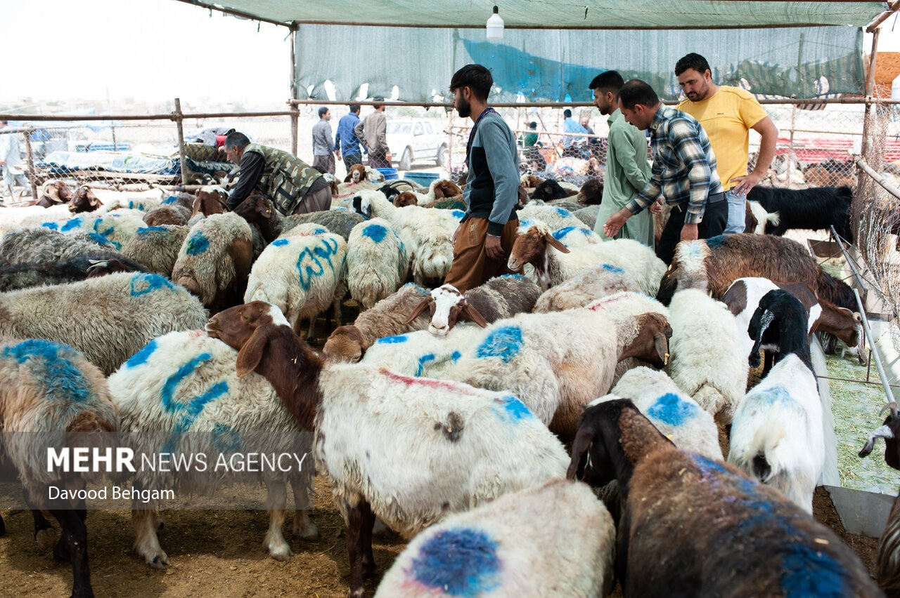

Как совершается курбани (жертвоприношение в Ид аль-Адха): правила, условия и смысл
Курбани (араб. удхия) — жертвоприношение определённого животного ради Аллаха в дни Ид аль-Адха (Курбан-байрам). Оно связано с историей пророка Ибрахима. Ниже по широко признанным источникам, прежде всего ханафитского мазхаба, изложено, когда и для кого оно обязательно, какие животные подходят, как распределяется мясо и чем различаются мазхабы.

Курбани — одно из важнейших богослужений для мусульман, совершается в дни Ид аль-Адха (Курбан-байрам). Ниже — что такое курбани, когда и для кого оно обязательно, какие животные приносятся в жертву и как распределяется мясо — изложено по широко признанным религиозным источникам. Опора — на ханафитский мазхаб, преобладающий в узбекском обществе; там, где мазхабы расходятся, это отмечается.
Что такое курбани
Курбани (араб. удхия) — это заклание определённого животного (овца, коза, корова/бык или верблюд) ради Аллаха, по правилам шариата, в дни Ид аль-Адха. Оно напоминает об истории пророка Ибрахима, который был готов принести в жертву своего сына, и Аллах послал вместо него барана. В Коране (сура «Аль-Хадж», 22:37) подчёркивается, что суть жертвы — таква (богобоязненность): до Аллаха доходит не мясо и не кровь, а благочестие верующих.
Когда совершается
Курбани начинается 10-го числа месяца Зуль-хиджа — в день Ид аль-Адха. В ханафитском мазхабе время заклания начинается после праздничного (ид) намаза и длится три дня, до заката 12-го Зуль-хиджа. Жители города или места, где совершается праздничный намаз, закалывают после намаза; где намаз не совершается, заклание допустимо после рассвета.
Для кого обязательно
В ханафитском мазхабе курбани обязательно (ваджиб) для каждого мусульманина, который совершеннолетний, в здравом уме, свободный, оседлый (не путник) и обладает имуществом на сумму нисаба. Проще говоря, кто обязан платить закят — или имеет сопоставимый излишек имущества в дни курбани — обязан и совершить курбани. Для бедных, не достигших нисаба, оно не обязательно.
Какие животные приносятся в жертву
Подходят овцы и козы (старше одного года), коровы/быки и крупный рогатый скот (старше двух лет) и верблюды (старше пяти лет). Овца или коза засчитывается как курбани одного человека; в корове/быке или верблюде могут участвовать до семи человек. Животное должно быть без изъянов и здоровым: слепое или одноглазое, хромое, истощённое или с отрезанной значительной частью уха либо хвоста приносить в жертву нельзя.
Как распределяется мясо
Делить мясо курбани на три части желательно (мустахабб): одна часть — себе и своей семье, одна — родственникам и друзьям, одна — бедным и нуждающимся. Хозяин также может есть его. Шкуру или мясо нельзя отдавать мяснику в качестве платы; мяснику платят отдельно.
Смысл и примечание
Главная цель курбани — проявить такву, то есть покорность и искренность перед Аллахом через материальную жертву, и помочь нуждающимся. Поэтому рекомендуется, чтобы доля мяса дошла до бедных. Поститься в дни Ид аль-Адха (10–13 Зуль-хиджа) запрещено.
Различия между мазхабами
Мазхабы расходятся в постановлении: в ханафитском мазхабе курбани — ваджиб для того, кто отвечает условиям, а в шафиитском, маликитском и ханбалитском мазхабах это подтверждённая сунна (сунна муаккада). Различаются и по продолжительности: три дня (10–12 Зуль-хиджа) в ханафитском мазхабе и до четырёх дней (10–13 Зуль-хиджа) в некоторых других. Учёные также расходятся в вопросе о раздаче стоимости животного как милостыни вместо заклания.